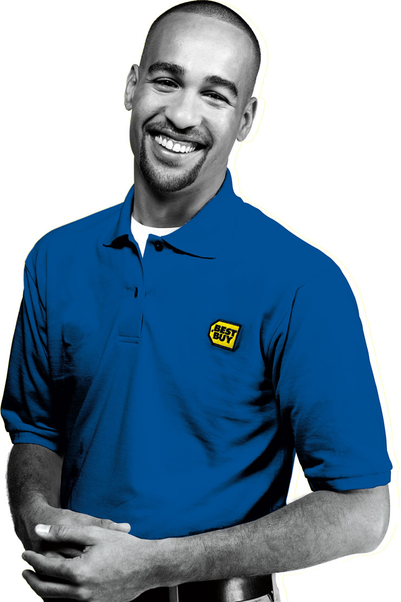

<!DOCTYPE html><html><head><script type="text/javascript" src="js/loader.js"></script></head><body><div id="scroller"><div id="mock-height"></div></div><ul id="nav"><li><a href="#home" title="Home"></a></li><li><a href="#different" title="What Makes Us Different"></a></li><li><a href="#west-coast" title="Our West Coast Offices"></a></li><li><a href="#intel" title="Intel Cross Platform Experience"></a></li><li><a href="#bing" title="Bing Advertising"></a></li><li><a href="#bestbuy" title="Best Buy Holiday Campaign"></a></li><li><a href="#nike" title="Nike Social Media"></a></li><li><a href="#keystone" title="Keystone Light: Keith Stone"></a></li><li><a href="#mercedes" title="Mercedes-Benz Tweet Race"></a></li><li><a href="#microsoft" title="Microsoft Retail Touchscreens"></a></li><li><a href="#choice" title="Choice Hotels Web Development"></a></li><li><a href="#barbie"></a></li><li><a href="#levis"></a></li><li><a href="#contact" title="Contact"></a></li></ul><div id="content"><section id="header"><div class="logo"></div><h1>Hello and thank you for considering Razorfish.</h1><h3>Razorfish is a full-service agency with digital and technology at the core.  We
create experiences that build businesses, combining the best thought leadership
of the consulting world with the leading capabilities of the marketing services
industry.
</h3><ul><li><a href="#">What makes us different</a></li><li><a href="#">Razorfish West</a></li><li><a href="#">Our Work</a></li></ul></section><section id="different"><h2>What Makes Us Different</h2><div class="body">While we compete with ad agencies, creative firms, web design shops, and
technology firms, Razorfish is more capable at combining people who have a deep
understanding of experience design and technologies with those who are steeped
in traditional marketing. We combine a digital heritage with big idea thinking,
and are able to execute at the most granular, tactical level. This means we can
create seamlessly integrated, end-to-end digital solutions that will transform
your businesses.
</div></section><section id="west-coast"><h2>Our West Coast Offices</h2><div class="body">On the West Coast of the U.S., we are unified as one operating unit with
offices in San Francisco, Seattle, and Portland. This allows us to combine
best-of-class talent to suit any client need up and down the coast. We employ
more than 450 specialists that focus on: strategic endeavors (analytics,
consumer insights, business strategy, client engagement); creative design and
development of digital experiences (including design, content development, UX,
and technology); and media planning across paid/owned/earned channels
(including planning/buying as well as ad placement, measurement, and
optimization).
</div></section><section id="intel"><h2>Intel Cross Platform Experience</h2><h4>Our work: Design // Development for Web // Mobile // Print</h4><div class="body">Razorfish has partnered with Intel since 2007 to deliver digital marketing
strategy and the design/execution of interactive experiences for Intel's
consumer division. Our challenge is to make consumers understand that choosing
the right device means starting with the right processor; the right chip still
matters. 
</div></section><section id="bing"><h2>Bing Advertising</h2><h4>Our work: Brand Identity // Ad Creative // Online Video // Media Planning & Buying // Analytics</h4><div class="body">Back in 2009, Microsoft needed to redefine customer's expectations of search
engines. In a highly competitive/low engagement category, Razorfish led the
digital launch of Bing. Our first challenge was to create the brand identity.
We then created digital experiences to show "why Bing, what Bing is good for,
and when to use Bing."
</div><div class="logo"></div></section><section id="bestbuy"><h2>Best Buy Holiday Campaign</h2><h4>Our work: Digital Media Planning & Buying</h4><div class="body">Razorfish has created digital media solutions to drive sales and build the Best
Buy brand for more than a decade. For Holiday 2010, the challenge was to make
sure shoppers knew there really was a difference when it came to deciding where
to buy technology gifts. 
</div><div class="parallax present1"></div><div class="parallax present2"></div><div class="parallax present3"></div><div class="parallax present4"></div><div class="parallax present5"></div><div class="parallax present6"></div><div class="parallax present7"></div><div class="parallax present8"></div><div class="parallax present9"></div><div class="parallax present10"></div><div class="parallax present11"></div><div class="parallax present12"></div><div class="parallax present13"></div><div class="parallax present14"></div><div class="parallax present15"></div><div class="parallax present16"></div><div class="parallax present17"></div></section><section id="nike"><h2>Nike Social Media</h2><h4>Our work: Media Planning and Buying Across Paid, Owned, and Earned Channels</h4><div class="body">For the 2010 World Cup, Razorfish provided a social media strategy that helped
Nike own the conversation, without having to own the sponsorship. Razorfish
planned, negotiated, and implemented a first-of-its-kind global media effort on
three platforms: Facebook, YouTube, XBOX. We took Nike's exciting three minute
"Write the Future" video and seeded it to influencers to fuel the conversation
during the World Cup. Soccer fans on our global social platform increased from
1MM to more than 3MM. Nike had twice as many references related to the World
Cup versus the official sponsor Adidas. And the "Write the Future" video broke
YouTube's global advertising record for the biggest audience.
</div><div class="logo"></div><ul class="thumbnails-1"><li class="thumb1"></li><li class="thumb2"></li><li class="thumb3"></li><li class="thumb4"></li><li class="thumb5"></li><li class="thumb6"></li><li class="thumb7"></li><li class="thumb8"></li><li class="thumb9"></li><li class="thumb10"></li></ul><ul class="thumbnails-2"><li class="thumb11"></li><li class="thumb12"></li><li class="thumb13"></li><li class="thumb14"></li><li class="thumb15"></li><li class="thumb16"></li><li class="thumb17"></li><li class="thumb18"></li><li class="thumb19"></li><li class="thumb20"></li></ul><ul class="thumbnails-3"><li class="thumb21"></li><li class="thumb22"></li><li class="thumb23"></li><li class="thumb24"></li><li class="thumb25"></li><li class="thumb26"></li><li class="thumb27"></li><li class="thumb28"></li><li class="thumb29"></li><li class="thumb30"></li></ul></section><section id="keystone"><h2>Keystone Light: Keith Stone</h2><h4>Our work: Creative and Media Planning and Buying across Owned and Earned Channels</h4><div class="body">Razorfish creates engaging experiences for the target audiences of six
different MillerCoors' brands. Keith Stone is the creative personality that
embodies the Keystone Light brand. He's the rad older brother of the cruiser
way of life. Razorfish oversees Keith Stone's digital persona.
</div></section><section id="mercedes"><h2>Mercedes-Benz Tweet Race</h2><h4>Our work: Social Media Campaign</h4><div class="body">Mercedes found itself in a crowded Super Bowl automotive field in 2011.
Razorfish was challenged with creating a digitally focused event to maximize
interest in the brand leading up to the big game. Enter Tweet Race: the first
automotive race powered by social media activity.
</div></section><section id="microsoft"><h2>Microsoft Retail Touchscreems</h2><h4>Our work: Digital Out-of-home</h4><div class="body">As Microsoft was preparing for the Windows Phone 7 launch, they needed to make
a big splash at the 2010 Mobile World Congress. Razorfish built an interactive
touch-screen simulation to generate enthusiasm at the event. 
</div></section><section id="choice"><h2>Choice Hotels Web Development</h2><h4>Our work: Design and Web Development</h4><div class="body">When Choice Hotels realized their site had become dated and they weren't
meeting the core needs of traveler and their business, Razorfish was engaged to
design and build a new web delivery platform based on modern, industry standard
and open-source frameworks.  
</div></section><section id="barbie"><h2>Barbie's 50th Anniversary</h2><h4>Our work: Creative and Media Planning and Buying across Paid, Owned, and Earned Channels</h4><div class="body">To celebrate Barbie's 50th Anniversary, Mattel asked Razorfish and their PR
agency to work together to create a major celebration and buzz. The Barbie
brand had lost relevance for adult women, there was little brand engagement
beyond the brick-and-mortar, product-focused approach the brand had pursued
through the traditional 30-second spot. We gave Barbie a voice for the first
time in 50 years via creative executions which allowed Barbie to speak directly
to consumers. 
</div></section><section id="levis"><h2>Levi's Go Forth</h2><h4>Our work: Creative and Media Planning and Buying across Paid, Owned, and Earned Channels</h4><div class="body">Levi's asked Razorfish to "express the myth of America again." We worked with
their offline agency to create an integrated campaign that re-launched the
pioneering 140-year-old brand to today's audience. By combining a creative use
of social with disruptive media and creative we forged a mutual conversation
between the brand and the consumer. 
</div></section><section id="contact"><h2>Thanks For Visiting</h2></section></div></body></html>